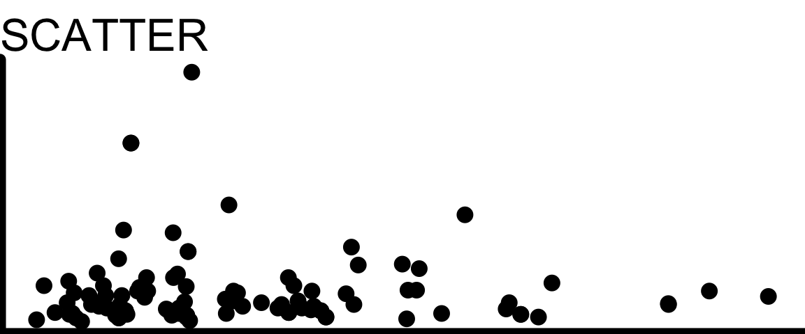
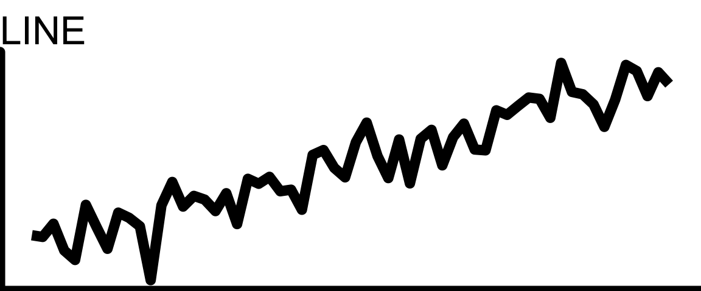
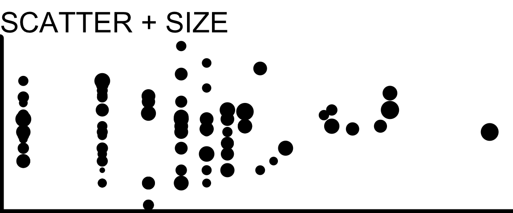

14 Gallery: Multiple Quantitative Variables
14.1 Scatter Plot
- A scatterplot is the default for visualizing the relationship between two quantitative variables
- Be sure you actually have two quantitative variables! If not, another plot may be a better option.
Let’s just reiterate: if one of your variables is actually or effectively categorical, a basic scatterplot is usually not ideal!
14.2 Line Plot

- If the x-axis variable is Time (or it otherwise makes sense to join the dots), a line can replace the dots, or be added to them
- Make sure connecting the dots makes sense in context and does not guide the eye to incorrect interpretations (for example, emphasizing outliers)
14.3 >2 Quantitative Variables
What if you have three or four quantitative variables whose relationships you’re curious about?
Proceed with caution!
It’s possible to include 3+ variables on one plot, but ideally it should still be interpretable at a glance:
- What is the main point of the figure? Is it possible to make the point without showing all 3+ variables together?
- Keep things as simple as you can while still telling the story you want to tell.
Scatter + Size

- You can adjust the size of each dot in a scatter plot to correspond to the value of a third variable
- This is especially useful when the third variable measures the size of the population being represented – for example, a scatter plot of life expectancy vs income for many countries, with point size indicating population of each country
Scatter + Color
You can also color by a third quantitative variable:
This usually only works well visually if all three variables are clearly associate with each other, so that certain colors are clearly dominant in certain regions of the graph. Otherwise, you get a mishmash of colors all over, which can be distracting.
Animation
It may be possible to show a third quantitative variable via animation (this often works especially well if that third variable is actually time!)